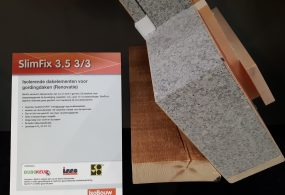

Dakisolatie slimfix renovatie dakplaten
Dakplaten voor gordingdaken (renovatie)
De SlimFix sandwich dakplaten zijn dun en licht. Dit betekent voor u meer toepassingsgemak bij de bevestiging, pasplaten, nok-, goot- en muuraansluitingen. SlimFix dakelementen zijn daardoor uitermate goed geschikt als renovatie dakplaten voor toepassing bij renovatieprojecten. De sandwich dakplaten zijn verkrijgbaar in diverse uitvoeringen. Afhankelijk van uw wensen in geluidswering en/of overspanningen kiest u de dakplaat die het beste bij uw project past. Dun en licht van gewicht.Meer verwerkingsgemak.
Grote overspanningen mogelijk.
Blijvend hoge isolatiewaarden van Rc 2,5 t/m 7,0 m2K/W.
Dakplaten met de beste milieuclassificatie (DUBOkeurmerk).
SlimFix dakplaten zijn sterk in prijs en prestatie
Dun en licht van gewicht, dus meer verwerkingsgemak.Aansluitingen eenvoudiger realiseerbaar.
Grote overspanningen mogelijk.
Superieur isolerend EPSHR.
Altijd in brandveilige SE-kwaliteit.
De elementen zijn ongevoelig voor vocht en duurzaam.
Blijvend hoge isolatiewaarden van Rc 2,5 t/m 7,0 m2K/W.
Makkelijk op maat te zagen zonder gezondheidsschadelijke stofhinder.
Volledig recyclebare dakplaten.
Zeer hoog afwerkingsniveau.
De beste milieuclassificatie (DUBOkeur).
Supersnelle levertijd.
Uitstekende prijs/kwaliteitverhouding.
Geprefabriceerde maatwerkoplossingen
SlimFix dakelementen kunnen fabrieksmatig extra bewerkingen krijgen. Door middel van deze maatwerkoplossingen wordt de verwerkingstijd verkort en ontstaat er minder afval. U heeft de keuze uit: Een goot- of boeiverjonging, dakvenstervoorzieningen, paselementen, gekoppelde dakplaten en projectspecifiek op maat gemaakte daksegmenten.Toepassingsgebied
De SlimFix renovatie dakplaten zijn toepasbaar bij renovatieprojecten onder met pannen of andere schubvormige bedekking afgewerkte hellende daken van woningen en utiliteitsgebouwen t/m klimaatklasse 2. Voor andere dakbedekkingen dan betonpannen dient overleg met IsoBouw en de constructeur plaats te vinden. Bij nieuwbouw worden extra eisen gesteld aan een dakplaat. Hiervoor verwijzen wij u naar de SlimFixXT dakelementen.Vergelijken
Dak
Platdakisolatie IKO EnerthermGeluid
Binnenwandsysteem HV70 Van FaayEco-Baffles Van VRK
Geluidisolatie Isolgomma Van Imbema
Gevel
BuitenisolatiegevelHoutvezelisolatie Van Gutex
Isolatie Isovlas PL Plaat
Spouwisolatie HR++ Neopixels EPS Parels
Glas
Glasfolie van HomechillHR++ Isolatieglas
Renovatieglas en Kozijnen
Vloer
Bodem afsluiting KalkkorrelsReflectiefolie Tonzon